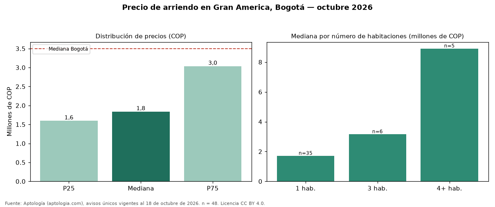

Precio de arriendo en Gran America, Bogotá — octubre 2026
COP 1.840.000 al mes es el canon mediano de vivienda en arriendo en Gran America (localidad de Teusaquillo), Bogotá (n = 48 avisos únicos). Eso la ubica 47 % por debajo de la mediana de Bogotá para vivienda (COP 3.497.000). El área mediana anunciada es 30 m² (en Bogotá: 70 m²). Por metro cuadrado, la mediana es COP 60.952/m² (+25 % frente a COP 48.571/m² en Bogotá), puesto 20 de 115 barrios con muestra suficiente. Cruzando con la oferta de venta del mismo barrio, la rentabilidad bruta implícita es de 7,6 % anual (canon por m² × 12 / precio por m²). El segmento con más oferta es el de 1 habitación (35 avisos, mediana COP 1.700.000); pasar de 3 habitaciones a 4 o más habitaciones sube la mediana 183 %. El rango intercuartílico va de COP 1.597.500 a COP 3.037.500 (razón 1,9), una dispersión moderada. Datos abiertos CC BY 4.0 de Aptología; fuente y búsqueda de inmuebles: https://www.aptologia.com/arriendo/bogota/gran-america. Archivos: PDF de 2 páginas, CSV con las cifras y gráfica PNG.

| Avisos únicos | 48 |
|---|---|
| Percentil 25 | COP 1.597.500 |
| Mediana | COP 1.840.000 |
| Percentil 75 | COP 3.037.500 |
| Mediana por m² | COP 60.952 |
Fuente: avisos vigentes de portales inmobiliarios recopilados por Aptología, deduplicados (mínimo 30 avisos únicos por celda). Precios pedidos, no cerrados. Fecha: 2026-10-18.